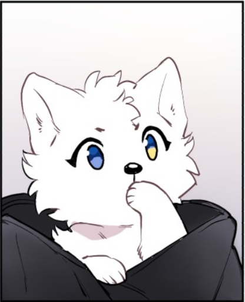

PAY ATTENTION TO THE RIGHT OF THE SCREEN
PROTECT THE CINNAMON ROLL
LUMINE IS ALL THAT MATTERS

.PNG alt=)
content headline
The unicorn is a legendary creature that has been described since antiquity as a beast with a single large, pointed, spiraling horn projecting from its forehead. The unicorn was depicted in ancient seals of the Indus Valley Civilization and was mentioned by the ancient Greeks in accounts of natural history by various writers, including Ctesias, Strabo, Pliny the Younger, Aelian
In European folklore, the unicorn is often depicted as a white horse-like or goat-like animal with a long horn and cloven hooves (sometimes a goat's beard). In the Middle Ages and Renaissance, it was commonly described as an extremely wild woodland creature, a symbol of purity and grace, which could be captured only by a virgin. In the encyclopedias, its horn was said to have the power to render poisoned water potable and to heal sickness. In medieval and Renaissance times, the tusk of the narwhal was sometimes sold as unicorn horn.
content headline
The unicorn is a legendary creature that has been described since antiquity as a beast with a single large, pointed, spiraling horn projecting from its forehead. The unicorn was depicted in ancient seals of the Indus Valley Civilization and was mentioned by the ancient Greeks in accounts of natural history by various writers, including Ctesias, Strabo, Pliny the Younger, Aelian
In European folklore, the unicorn is often depicted as a white horse-like or goat-like animal with a long horn and cloven hooves (sometimes a goat's beard). In the Middle Ages and Renaissance, it was commonly described as an extremely wild woodland creature, a symbol of purity and grace, which could be captured only by a virgin. In the encyclopedias, its horn was said to have the power to render poisoned water potable and to heal sickness. In medieval and Renaissance times, the tusk of the narwhal was sometimes sold as unicorn horn.
this box will float to the right